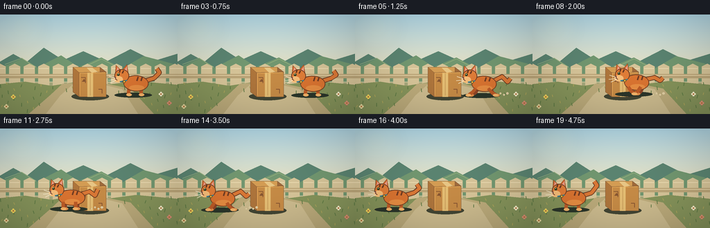
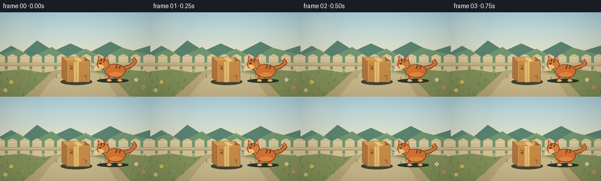

CODING AGENTS AS PIXEL WORLD MODELS
traex/GPT-5.6-Sol · dynamic_spatial_relationship_0007
点击播放 · 原生 RGB 像素
逐轮保存的候选
回放视频、检查图与代码变化。
每份候选均可单独播放。实际图片检查记录在下方工具轨迹中。
候选 01播放与检查图
点击播放 · 原生 RGB 像素


展开代码变化
--- 上一保存版本
+++ 本次保存版本
@@ -0,0 +1,198 @@
+from pathlib import Path
+import math
+import numpy as np
+from PIL import Image, ImageDraw, ImageFilter
+import artifact_io
+
+# Deterministic, hand-drawn 2-D animation rendered at 3x and downsampled.
+W,H,N = 256,144,20
+S=3
+rng=np.random.default_rng(7)
+
+def sc(v): return int(round(v*S))
+def pts(seq): return [(sc(x),sc(y)) for x,y in seq]
+
+def ellipse(draw, box, fill, outline=None, width=1):
+ draw.ellipse(tuple(sc(x) for x in box), fill=fill, outline=outline, width=sc(width) if outline else 1)
+def polygon(draw, p, fill, outline=None): draw.polygon(pts(p), fill=fill, outline=outline)
+def line(draw, p, fill, width=1, joint='curve'): draw.line(pts(p), fill=fill, width=sc(width), joint=joint)
+def rr(draw, box, rad, fill, outline=None, width=1):
+ draw.rounded_rectangle(tuple(sc(x) for x in box), radius=sc(rad), fill=fill, outline=outline, width=sc(width))
+
+def rotated_ellipse(img, box, angle, fill, outline=None, ow=1):
+ x0,y0,x1,y1=box
+ pad=5
+ ww=sc(x1-x0+pad*2); hh=sc(y1-y0+pad*2)
+ lay=Image.new('RGBA',(ww,hh),(0,0,0,0)); d=ImageDraw.Draw(lay)
+ d.ellipse((sc(pad),sc(pad),sc(x1-x0+pad),sc(y1-y0+pad)),fill=fill,outline=outline,width=sc(ow))
+ lay=lay.rotate(angle,resample=Image.Resampling.BICUBIC,expand=True)
+ img.alpha_composite(lay,(sc((x0+x1)/2)-lay.width//2,sc((y0+y1)/2)-lay.height//2))
+
+def background(t):
+ # warm morning sky gradient
+ a=np.zeros((H*S,W*S,4),np.uint8)
+ for y in range(H*S):
+ yy=y/(H*S-1)
+ if yy<.68:
+ q=yy/.68
+ c=np.array([181,220,235])*(1-q)+np.array([241,224,183])*q
+ else:
+ q=(yy-.68)/.32
+ c=np.array([169,171,126])*(1-q)+np.array([123,123,81])*q
+ a[y,:,0:3]=c.astype(np.uint8); a[y,:,3]=255
+ im=Image.fromarray(a,'RGBA'); d=ImageDraw.Draw(im)
+ # soft sun glow
+ glow=Image.new('RGBA',im.size,(0,0,0,0)); gd=ImageDraw.Draw(glow)
+ for r,al in [(35,7),(26,9),(18,13),(9,30)]: ellipse(gd,(31-r,19-r,31+r,19+r),(255,244,188,al))
+ glow=glow.filter(ImageFilter.GaussianBlur(sc(7))); im=Image.alpha_composite(im,glow); d=ImageDraw.Draw(im)
+ # distant hills and little clouds
+ polygon(d,[(-5,71),(19,57),(39,68),(63,48),(91,66),(120,53),(153,68),(188,50),(222,67),(261,55),(261,93),(-5,93)],(91,132,113,255))
+ polygon(d,[(-5,79),(31,64),(53,77),(88,59),(113,76),(146,62),(176,78),(207,60),(264,75),(264,97),(-5,97)],(114,151,112,255))
+ # atmospheric highlights on hills
+ line(d,[(7,72),(31,63),(52,76)],(151,177,128,150),1)
+ line(d,[(127,73),(146,64),(169,76)],(151,177,128,130),1)
+ # fence
+ for x in range(-8,270,21):
+ polygon(d,[(x,75),(x+8,71),(x+16,75),(x+16,105),(x,105)],(215,197,153,255))
+ line(d,[(x+1,78),(x+15,78)],(237,220,178,255),1)
+ rr(d,(-2,86,258,92),1,(188,166,121,255)); line(d,[(-2,88),(258,88)],(231,213,169,210),1)
+ # ground and winding pale path
+ polygon(d,[(-5,101),(36,97),(74,103),(113,97),(158,101),(196,96),(261,102),(261,146),(-5,146)],(134,148,91,255))
+ polygon(d,[(90,100),(137,97),(188,107),(222,144),(41,144),(73,116)],(188,171,123,255))
+ polygon(d,[(105,101),(138,99),(176,108),(199,144),(66,144),(87,117)],(205,188,143,255))
+ # grass wisps, deterministic positions
+ for i in range(70):
+ x=(i*47+13)%263-3; y=101+((i*31)%42)
+ if 61<x<207 and y>114: continue
+ col=(91,120,67,180) if i%3 else (177,167,91,170)
+ lean=((i%5)-2)*.7
+ line(d,[(x,y),(x+lean,y-3-(i%3))],col,1)
+ # foreground flowers
+ for x,y,c in [(19,119,(245,215,93,255)),(232,115,(246,237,203,255)),(244,128,(224,144,119,255)),(9,133,(236,220,163,255))]:
+ line(d,[(x,y+4),(x,y)],(64,105,58,255),1)
+ for ang in range(0,360,90):
+ dx=math.cos(math.radians(ang))*2; dy=math.sin(math.radians(ang))*2
+ ellipse(d,(x+dx-1.3,y+dy-1.3,x+dx+1.3,y+dy+1.3),c)
+ ellipse(d,(x-1,y-1,x+1,y+1),(183,119,60,255))
+ return im
+
+def draw_box(im):
+ d=ImageDraw.Draw(im)
+ # contact shadow
+ ellipse(d,(103,113,157,124),(67,70,52,75))
+ # box front, side, top
+ polygon(d,[(105,76),(144,76),(153,83),(114,84)],(212,157,84,255),(117,79,48,255))
+ polygon(d,[(144,76),(153,83),(153,119),(144,115)],(159,106,59,255),(105,71,47,255))
+ polygon(d,[(105,76),(114,84),(114,119),(105,112)],(174,117,60,255),(105,71,47,255))
+ polygon(d,[(114,84),(153,83),(153,119),(114,119)],(198,139,70,255),(105,71,47,255))
+ # tape down front and top
+ polygon(d,[(125,77),(133,77),(141,83),(132,84)],(232,198,133,230))
+ polygon(d,[(126,84),(134,84),(134,119),(126,119)],(229,190,116,235))
+ line(d,[(130,85),(130,117)],(202,157,90,170),1)
+ # creases and printed handling arrows (no text)
+ line(d,[(117,91),(123,91),(123,99)],(136,86,49,210),1)
+ polygon(d,[(118,97),(121,93),(124,97)],(136,86,49,210))
+ line(d,[(142,108),(147,108),(147,114)],(132,83,49,150),1)
+ # edge highlights
+ line(d,[(115,85),(151,84)],(235,177,96,210),1)
+ line(d,[(115,85),(115,117)],(231,166,87,140),1)
+
+def draw_dust(im,x,y,strength,phase):
+ if strength<=0: return
+ d=ImageDraw.Draw(im)
+ for j in range(4):
+ px=x+19+j*5+phase*1.7
+ py=y+15-(j%2)*2
+ r=(1.4+j*.45)*strength
+ ellipse(d,(px-r,py-r,px+r,py+r),(226,207,164,int(100*strength)))
+
+def draw_cat(im,cx,cy,frame,running):
+ d=ImageDraw.Draw(im)
+ phase=(frame-4)*1.35
+ bob=(math.sin(phase*2)*1.5 if running else math.sin(frame*.65)*.45)
+ cy+=bob
+ stretch=1.5 if running and abs(math.sin(phase))<.5 else 0
+ # soft contact shadow
+ ellipse(d,(cx-29,cy+12,cx+25,cy+19),(43,54,42,75))
+ # tail behind body, expressive and curved to the right
+ if running:
+ tailpts=[(cx+16,cy-6),(cx+28,cy-10-math.sin(phase)*2),(cx+36,cy-4),(cx+40,cy-10+math.cos(phase)*3)]
+ else:
+ sway=math.sin(frame*.55)*3
+ tailpts=[(cx+15,cy-5),(cx+28,cy-9),(cx+36,cy-17+sway),(cx+32,cy-23+sway)]
+ line(d,tailpts,(105,57,33,255),7)
+ line(d,tailpts,(218,120,54,255),5)
+ # legs animate with a clear running gait
+ legcol=(189,91,39,255); paw=(245,180,105,255)
+ if running:
+ a=math.sin(phase)
+ # far legs muted
+ for ox,sgn in [(-7,-1),(11,1)]:
+ hipx=cx+ox; footx=hipx+sgn*a*10
+ line(d,[(hipx,cy+6),(hipx+sgn*a*4,cy+12),(footx,cy+15)],(145,70,39,255),5)
+ ellipse(d,(footx-4,cy+13,footx+4,cy+17),(228,143,74,255))
+ else:
+ for ox in [-8,10]:
+ line(d,[(cx+ox,cy+5),(cx+ox-1,cy+15)],legcol,5)
+ ellipse(d,(cx+ox-4,cy+13,cx+ox+4,cy+17),paw)
+ # body
+ rotated_ellipse(im,(cx-16-stretch,cy-13,cx+20+stretch,cy+10),-2,(218,116,49,255),(105,57,33,255),1)
+ d=ImageDraw.Draw(im)
+ # body stripes and creamy belly patch
+ for off in [5,11]:
+ line(d,[(cx+off,cy-11),(cx+off-2,cy-5)],(113,60,35,220),2)
+ rotated_ellipse(im,(cx-8,cy+1,cx+14,cy+9),0,(237,153,75,170),None)
+ d=ImageDraw.Draw(im)
+ # front legs atop body silhouette for readable gait
+ if running:
+ a=math.sin(phase+math.pi)
+ for ox,sgn in [(-10,1),(8,-1)]:
+ hipx=cx+ox; knee=hipx+sgn*a*5; foot=hipx+sgn*a*11
+ line(d,[(hipx,cy+5),(knee,cy+11),(foot,cy+15)],legcol,5)
+ ellipse(d,(foot-4,cy+13,foot+4,cy+17),paw)
+ # head on left, ears behind
+ hx=cx-18-stretch*.4; hy=cy-11
+ polygon(d,[(hx-10,hy-5),(hx-9,hy-17),(hx-2,hy-10)],(205,102,44,255),(105,57,33,255))
+ polygon(d,[(hx+1,hy-11),(hx+7,hy-18),(hx+9,hy-5)],(205,102,44,255),(105,57,33,255))
+ polygon(d,[(hx-8,hy-8),(hx-7,hy-14),(hx-3,hy-9)],(238,158,136,255))
+ polygon(d,[(hx+3,hy-10),(hx+7,hy-15),(hx+7,hy-7)],(238,158,136,255))
+ ellipse(d,(hx-11,hy-11,hx+10,hy+8),(224,125,56,255),(105,57,33,255),1)
+ # cheek/muzzle
+ ellipse(d,(hx-12,hy-1,hx+1,hy+8),(248,190,121,255))
+ # forehead tabby lines
+ line(d,[(hx-3,hy-10),(hx-4,hy-6)],(105,57,33,230),2)
+ line(d,[(hx+2,hy-9),(hx,hy-5)],(105,57,33,230),2)
+ # eye, nose, face aimed left
+ ellipse(d,(hx-7.2,hy-5.5,hx-3.7,hy-1.5),(52,64,35,255))
+ ellipse(d,(hx-6.4,hy-5,hx-5.3,hy-3.8),(244,235,172,255))
+ polygon(d,[(hx-12,hy+1),(hx-9,hy),(hx-9,hy+3)],(105,53,50,255))
+ line(d,[(hx-10,hy+3),(hx-7,hy+5)],(113,62,45,255),1)
+ # whiskers
+ line(d,[(hx-10,hy+2),(hx-19,hy-1)],(249,239,209,230),1)
+ line(d,[(hx-10,hy+4),(hx-20,hy+5)],(249,239,209,220),1)
+ line(d,[(hx-9,hy+5),(hx-17,hy+9)],(249,239,209,200),1)
+ # collar and bell
+ line(d,[(hx-3,hy+7),(hx+7,hy+5)],(55,132,151,255),2)
+ ellipse(d,(hx+1,hy+5,hx+5,hy+9),(245,202,73,255),(118,82,34,255),1)
+
+def make_frame(i):
+ im=background(i)
+ draw_box(im)
+ # timeline: clear hold on right, energetic traverse, clear hold on left
+ positions=[194,194,194,193,191,184,174,162,148,133,117,101,86,73,63,58,57,57,57,57]
+ cx=positions[i]
+ running=4<=i<=14
+ cy=101 if running else (101 if i<4 else 102)
+ if running: draw_dust(im,cx,cy,0.65,i-4)
+ draw_cat(im,cx,cy,i,running)
+ # foreground vignette and mild depth polish
+ arr=np.asarray(im.convert('RGB')).astype(np.float32)
+ yy,xx=np.mgrid[0:H*S,0:W*S]
+ dx=(xx-W*S/2)/(W*S/2); dy=(yy-H*S/2)/(H*S/2)
+ vig=np.clip(1-0.10*(dx*dx+dy*dy),.82,1)[...,None]
+ arr=np.clip(arr*vig,0,255).astype(np.uint8)
+ out=Image.fromarray(arr).resize((W,H),Image.Resampling.LANCZOS)
+ return np.asarray(out,dtype=np.uint8)
+
+frames=np.stack([make_frame(i) for i in range(N)])
+artifact_io.save(frames,Path(__file__).resolve().parent)
可观测工具轨迹
实际执行的命令与返回图片。
命令 1exit 0
/bin/bash -lc "cat prompt.txt && printf '\\n---RULES---\\n' && cat GENERATION_RULES.md && printf '\\n---SPEC---\\n' && cat task_spec.json"
命令 2exit 0
/bin/bash -lc "find . -maxdepth 2 -type f -printf '%p\\n' | sort"
命令 3exit 0
/bin/bash -lc 'cat artifact_io.py'
命令 4exit 0
/bin/bash -lc "cat > generate.py <<'PY'
from pathlib import Path
import math
import numpy as np
from PIL import Image, ImageDraw, ImageFilter
import artifact_io
# Deterministic, hand-drawn 2-D animation rendered at 3x and downsampled.
W,H,N = 256,144,20
S=3
rng=np.random.default_rng(7)
def sc(v): return int(round(v*S))
def pts(seq): return [(sc(x),sc(y)) for x,y in seq]
def ellipse(draw, box, fill, outline=None, width=1):
draw.ellipse(tuple(sc(x) for x in box), fill=fill, outline=outline, width=sc(width) if outline else 1)
def polygon(draw, p, fill, outline=None): draw.polygon(pts(p), fill=fill, outline=outline)
def line(draw, p, fill, width=1, joint='curve'): draw.line(pts(p), fill=fill, width=sc(width), joint=joint)
def rr(draw, box, rad, fill, outline=None, width=1):
draw.rounded_rectangle(tuple(sc(x) for x in box), radius=sc(rad), fill=fill, outline=outline, width=sc(width))
def rotated_ellipse(img, box, angle, fill, outline=None, ow=1):
x0,y0,x1,y1=box
pad=5
ww=sc(x1-x0+pad*2); hh=sc(y1-y0+pad*2)
lay=Image.new('RGBA',(ww,hh),(0,0,0,0)); d=ImageDraw.Draw(lay)
d.ellipse((sc(pad),sc(pad),sc(x1-x0+pad),sc(y1-y0+pad)),fill=fill,outline=outline,width=sc(ow))
lay=lay.rotate(angle,resample=Image.Resampling.BICUBIC,expand=True)
img.alpha_composite(lay,(sc((x0+x1)/2)-lay.width//2,sc((y0+y1)/2)-lay.height//2))
def background(t):
# warm morning sky gradient
a=np.zeros((H*S,W*S,4),np.uint8)
for y in range(H*S):
yy=y/(H*S-1)
if yy<.68:
q=yy/.68
c=np.array([181,220,235])*(1-q)+np.array([241,224,183])*q
else:
q=(yy-.68)/.32
c=np.array([169,171,126])*(1-q)+np.array([123,123,81])*q
a[y,:,0:3]=c.astype(np.uint8); a[y,:,3]=255
im=Image.fromarray(a,'RGBA'); d=ImageDraw.Draw(im)
# soft sun glow
glow=Image.new('RGBA',im.size,(0,0,0,0)); gd=ImageDraw.Draw(glow)
for r,al in [(35,7),(26,9),(18,13),(9,30)]: ellipse(gd,(31-r,19-r,31+r,19+r),(255,244,188,al))
glow=glow.filter(ImageFilter.GaussianBlur(sc(7))); im=Image.alpha_composite(im,glow); d=ImageDraw.Draw(im)
# distant hills and little clouds
polygon(d,[(-5,71),(19,57),(39,68),(63,48),(91,66),(120,53),(153,68),(188,50),(222,67),(261,55),(261,93),(-5,93)],(91,132,113,255))
polygon(d,[(-5,79),(31,64),(53,77),(88,59),(113,76),(146,62),(176,78),(207,60),(264,75),(264,97),(-5,97)],(114,151,112,255))
# atmospheric highlights on hills
line(d,[(7,72),(31,63),(52,76)],(151,177,128,150),1)
line(d,[(127,73),(146,64),(169,76)],(151,177,128,130),1)
# fence
for x in range(-8,270,21):
polygon(d,[(x,75),(x+8,71),(x+16,75),(x+16,105),(x,105)],(215,197,153,255))
line(d,[(x+1,78),(x+15,78)],(237,220,178,255),1)
rr(d,(-2,86,258,92),1,(188,166,121,255)); line(d,[(-2,88),(258,88)],(231,213,169,210),1)
# ground and winding pale path
polygon(d,[(-5,101),(36,97),(74,103),(113,97),(158,101),(196,96),(261,102),(261,146),(-5,146)],(134,148,91,255))
polygon(d,[(90,100),(137,97),(188,107),(222,144),(41,144),(73,116)],(188,171,123,255))
polygon(d,[(105,101),(138,99),(176,108),(199,144),(66,144),(87,117)],(205,188,143,255))
# grass wisps, deterministic positions
for i in range(70):
x=(i*47+13)%263-3; y=101+((i*31)%42)
if 61<x<207 and y>114: continue
col=(91,120,67,180) if i%3 else (177,167,91,170)
lean=((i%5)-2)*.7
line(d,[(x,y),(x+lean,y-3-(i%3))],col,1)
# foreground flowers
for x,y,c in [(19,119,(245,215,93,255)),(232,115,(246,237,203,255)),(244,128,(224,144,119,255)),(9,133,(236,220,163,255))]:
line(d,[(x,y+4),(x,y)],(64,105,58,255),1)
for ang in range(0,360,90):
dx=math.cos(math.radians(ang))*2; dy=math.sin(math.radians(ang))*2
ellipse(d,(x+dx-1.3,y+dy-1.3,x+dx+1.3,y+dy+1.3),c)
ellipse(d,(x-1,y-1,x+1,y+1),(183,119,60,255))
return im
def draw_box(im):
d=ImageDraw.Draw(im)
# contact shadow
ellipse(d,(103,113,157,124),(67,70,52,75))
# box front, side, top
polygon(d,[(105,76),(144,76),(153,83),(114,84)],(212,157,84,255),(117,79,48,255))
polygon(d,[(144,76),(153,83),(153,119),(144,115)],(159,106,59,255),(105,71,47,255))
polygon(d,[(105,76),(114,84),(114,119),(105,112)],(174,117,60,255),(105,71,47,255))
polygon(d,[(114,84),(153,83),(153,119),(114,119)],(198,139,70,255),(105,71,47,255))
# tape down front and top
polygon(d,[(125,77),(133,77),(141,83),(132,84)],(232,198,133,230))
polygon(d,[(126,84),(134,84),(134,119),(126,119)],(229,190,116,235))
line(d,[(130,85),(130,117)],(202,157,90,170),1)
# creases and printed handling arrows (no text)
line(d,[(117,91),(123,91),(123,99)],(136,86,49,210),1)
polygon(d,[(118,97),(121,93),(124,97)],(136,86,49,210))
line(d,[(142,108),(147,108),(147,114)],(132,83,49,150),1)
# edge highlights
line(d,[(115,85),(151,84)],(235,177,96,210),1)
line(d,[(115,85),(115,117)],(231,166,87,140),1)
def draw_dust(im,x,y,strength,phase):
if strength<=0: return
d=ImageDraw.Draw(im)
for j in range(4):
px=x+19+j*5+phase*1.7
py=y+15-(j%2)*2
r=(1.4+j*.45)*strength
ellipse(d,(px-r,py-r,px+r,py+r),(226,207,164,int(100*strength)))
def draw_cat(im,cx,cy,frame,running):
d=ImageDraw.Draw(im)
phase=(frame-4)*1.35
bob=(math.sin(phase*2)*1.5 if running else math.sin(frame*.65)*.45)
cy+=bob
stretch=1.5 if running and abs(math.sin(phase))<.5 else 0
# soft contact shadow
ellipse(d,(cx-29,cy+12,cx+25,cy+19),(43,54,42,75))
# tail behind body, expressive and curved to the right
if running:
tailpts=[(cx+16,cy-6),(cx+28,cy-10-math.sin(phase)*2),(cx+36,cy-4),(cx+40,cy-10+math.cos(phase)*3)]
else:
sway=math.sin(frame*.55)*3
tailpts=[(cx+15,cy-5),(cx+28,cy-9),(cx+36,cy-17+sway),(cx+32,cy-23+sway)]
line(d,tailpts,(105,57,33,255),7)
line(d,tailpts,(218,120,54,255),5)
# legs animate with a clear running gait
legcol=(189,91,39,255); paw=(245,180,105,255)
if running:
a=math.sin(phase)
# far legs muted
for ox,sgn in [(-7,-1),(11,1)]:
hipx=cx+ox; footx=hipx+sgn*a*10
line(d,[(hipx,cy+6),(hipx+sgn*a*4,cy+12),(footx,cy+15)],(145,70,39,255),5)
ellipse(d,(footx-4,cy+13,footx+4,cy+17),(228,143,74,255))
else:
for ox in [-8,10]:
line(d,[(cx+ox,cy+5),(cx+ox-1,cy+15)],legcol,5)
ellipse(d,(cx+ox-4,cy+13,cx+ox+4,cy+17),paw)
# body
rotated_ellipse(im,(cx-16-stretch,cy-13,cx+20+stretch,cy+10),-2,(218,116,49,255),(105,57,33,255),1)
d=ImageDraw.Draw(im)
# body stripes and creamy belly patch
for off in [5,11]:
line(d,[(cx+off,cy-11),(cx+off-2,cy-5)],(113,60,35,220),2)
rotated_ellipse(im,(cx-8,cy+1,cx+14,cy+9),0,(237,153,75,170),None)
d=ImageDraw.Draw(im)
# front legs atop body silhouette for readable gait
if running:
a=math.sin(phase+math.pi)
for ox,sgn in [(-10,1),(8,-1)]:
hipx=cx+ox; knee=hipx+sgn*a*5; foot=hipx+sgn*a*11
line(d,[(hipx,cy+5),(knee,cy+11),(foot,cy+15)],legcol,5)
ellipse(d,(foot-4,cy+13,foot+4,cy+17),paw)
# head on left, ears behind
hx=cx-18-stretch*.4; hy=cy-11
polygon(d,[(hx-10,hy-5),(hx-9,hy-17),(hx-2,hy-10)],(205,102,44,255),(105,57,33,255))
polygon(d,[(hx+1,hy-11),(hx+7,hy-18),(hx+9,hy-5)],(205,102,44,255),(105,57,33,255))
polygon(d,[(hx-8,hy-8),(hx-7,hy-14),(hx-3,hy-9)],(238,158,136,255))
polygon(d,[(hx+3,hy-10),(hx+7,hy-15),(hx+7,hy-7)],(238,158,136,255))
ellipse(d,(hx-11,hy-11,hx+10,hy+8),(224,125,56,255),(105,57,33,255),1)
# cheek/muzzle
ellipse(d,(hx-12,hy-1,hx+1,hy+8),(248,190,121,255))
# forehead tabby lines
line(d,[(hx-3,hy-10),(hx-4,hy-6)],(105,57,33,230),2)
line(d,[(hx+2,hy-9),(hx,hy-5)],(105,57,33,230),2)
# eye, nose, face aimed left
ellipse(d,(hx-7.2,hy-5.5,hx-3.7,hy-1.5),(52,64,35,255))
ellipse(d,(hx-6.4,hy-5,hx-5.3,hy-3.8),(244,235,172,255))
polygon(d,[(hx-12,hy+1),(hx-9,hy),(hx-9,hy+3)],(105,53,50,255))
line(d,[(hx-10,hy+3),(hx-7,hy+5)],(113,62,45,255),1)
# whiskers
line(d,[(hx-10,hy+2),(hx-19,hy-1)],(249,239,209,230),1)
line(d,[(hx-10,hy+4),(hx-20,hy+5)],(249,239,209,220),1)
line(d,[(hx-9,hy+5),(hx-17,hy+9)],(249,239,209,200),1)
# collar and bell
line(d,[(hx-3,hy+7),(hx+7,hy+5)],(55,132,151,255),2)
ellipse(d,(hx+1,hy+5,hx+5,hy+9),(245,202,73,255),(118,82,34,255),1)
def make_frame(i):
im=background(i)
draw_box(im)
# timeline: clear hold on right, energetic traverse, clear hold on left
positions=[194,194,194,193,191,184,174,162,148,133,117,101,86,73,63,58,57,57,57,57]
cx=positions[i]
running=4<=i<=14
cy=101 if running else (101 if i<4 else 102)
if running: draw_dust(im,cx,cy,0.65,i-4)
draw_cat(im,cx,cy,i,running)
# foreground vignette and mild depth polish
arr=np.asarray(im.convert('RGB')).astype(np.float32)
yy,xx=np.mgrid[0:H*S,0:W*S]
dx=(xx-W*S/2)/(W*S/2); dy=(yy-H*S/2)/(H*S/2)
vig=np.clip(1-0.10*(dx*dx+dy*dy),.82,1)[...,None]
arr=np.clip(arr*vig,0,255).astype(np.uint8)
out=Image.fromarray(arr).resize((W,H),Image.Resampling.LANCZOS)
return np.asarray(out,dtype=np.uint8)
frames=np.stack([make_frame(i) for i in range(N)])
artifact_io.save(frames,Path(__file__).resolve().parent)
PY
python generate.py
python - <<'PY'
import numpy as np
from PIL import Image
z=np.load('pixels.npz')['pixels']
print(z.shape,z.dtype, 'frames:',len(list(__import__('pathlib').Path('frames').glob('*.png'))))
PY"视觉工具实际返回图片 1

保存候选 1 份；完成命令 4 次；可验证图片返回 1 张。原始 API 响应与完整日志保留在本地。